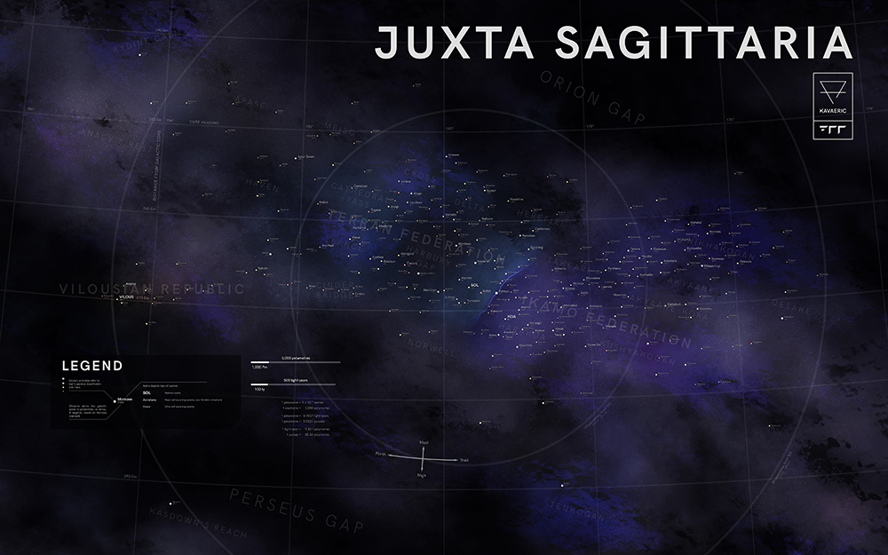

Juxta Sagittaria
Juxta Sagittaria (The Orion Spur, or Sagittaria for short) is a section of the Sagittarius arm of the Galaxy that lies approximately 265 exametres (28 kly) from the galactic core and is inhabited by all known forms of life, including all sapient populations.  Map of Juxta Sagittaria.
{kind=link}
Galactic location
Juxta Sagittaria branches off from the main Sagittarius arm around 210 exametres forth and continues down some 150 exametres trail. It is separated from the main arm by the Orion Gap to the medi, and the Perseus Gap to the nigh, both of which are approximately 10 exametres wide.
Exploration
Less than half of a percent of the stars in the region have been catalogued and surveyed, and even fewer with any permanent population. Although a sufficiently powered quantum drive](Quantum_Drive.html) can theoretically cross the diameter in a little over two months, exploration of space is limited through the need to refuel, as well as uncharted regions of hyperspace littered with antimatter which may damage or even destroy a spacecraft on contact. Warp drives bypass hyperspace entirely, but are many orders of magnitude slower.